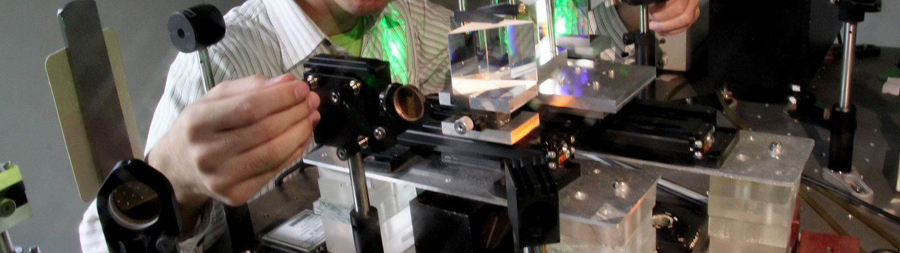
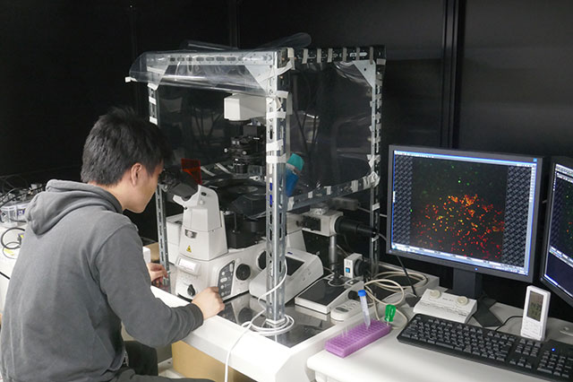
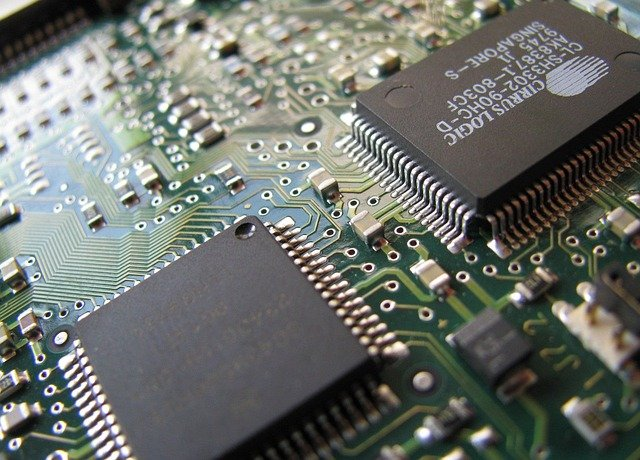
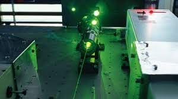
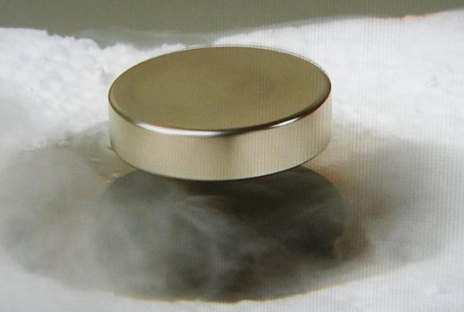

Ⅲ類ではどんなことをするの？
Ⅲ類では理科についてくわしく学べます。特に物理と化学を使って様々なものを作ることができます。
工学というものづくりをすることが多いです。

プログラム
Ⅲ類の中にはさらにくわしく学べるプログラムが5つあります。
どのようなことをするのイメージしてもらうために画像と一緒に紹介します。
機械システム
物理の知識を使って機械の部品や材料を作ることができます。

電子工学
半導体というコンピュータの部品などの小さな部品を作ることができます。

光工学
レーザーを出す機械や太陽の光を使った機械などの光に関係したものを作ることができます。

情報理工
物理の実験をしたり、物理の知識を使って材料を作ることができます。

化学生命工学
分子や細胞などの小さなものを使って観察をしたり、材料を作ることができます。